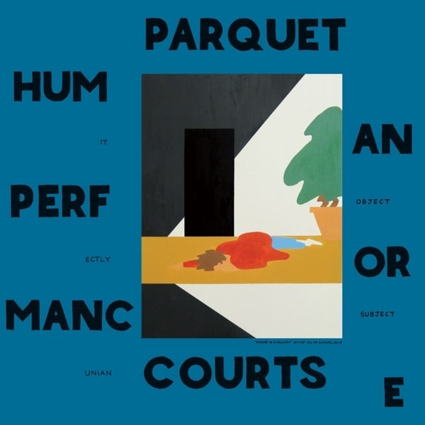

American Specialties
Tracklist
Side A
- "Her Boyfriend's Band"
- "Food Stamps Office"
- "Mezzanine"
- "American Specialties"
- "Other Desert Cities"
Side B
- "Square States"
- "College Chess Circuit"
- "Nation of Islam: Nunavut"
- "Largish/Dominant"
- "A.M. Reprise (Rebellious Outtake)"
- "Tidal Hisses"
Album Info
American Specialties is the debut studio album by American indie rock band Parquet Courts, initially released
in
2011 as a limited edition cassette on Cut the Cord That... Records. A vinyl version of the album was
subsequently released on Pinball! Records in 2012. The album was partly mixed by Woods multi-instrumentalist
Jarvis Taveniere.
In 2016, vocalist and guitarist Andrew Savage noted that the album stands mostly alone within the band's
discography, in terms of its songwriting and overall aesthetic: "There’s a lot of stuff on American
Specialties
that didn’t really get revisited in the band, although its essence has informed everything the band has
done."
Regarding American Specialties initial release on cassette, vocalist and guitarist Andrew Savage noted,
"Cassettes force you to be patient and digest what you're listening to. People that are curious and go out
and
search for music are listening to cassettes because maybe there's only a hundred of them – and that's all
the
more incentive because they'd like to hear it before it becomes completely unavailable. I like to reward
people's curiosity."

Light Up Gold
Tracklist
- "Master Of My Craft"
- "Borrowed Time"
- "Donuts Only"
- "Yr No Stoner"
- "Yonder Is Closer to the Heart"
- "Careers in Combat"
- "Light Up Gold I"
- "Light Up Gold II"
- "N Dakota"
- "Stoned and Starving"
- "No Ideas"
- "Caster of Worthless Spells"
- "Disney P.T."
- "Tears O Plenty"
- "Picture of Health"
Album Info
Light Up Gold is the second studio album by American indie rock band Parquet Courts, initially released on
August
18, 2012 on the lead frontman A. Savage's label Dull Tools. It was later released on a larger label, What's
Your
Rupture?, in 2013 to highly positive reviews, with a Metascore of 84/100 on Metacritic.

Sunbathing Animal
Tracklist
- "Bodies Made of"
- "Black & White"
- "Dear Ramona"
- "What Color is Blood?"
- "Vienna II"
- "Always Back in Town"
- "She's Rolling"
- "Sunbathing Animal"
- "Up All Night"
- "Instant Disassembly"
- "Ducking and Dodging"
- "Raw Milk"
- "Into the Garden"
Album Info
Sunbathing Animal is the third studio album by American punk rock band Parquet Courts, released on June 3,
2014
on What's Your Rupture? and Rough Trade Records.
Sunbathing Animal was recorded in 2013, over the course of three sessions. The first of these sessions
yielded
the EP, Tally All the Things That You Broke (2013), with vocalist and guitarist Austin Brown stating, “We
had to
kind of squeeze [recording] in between long runs of touring; whenever we had a couple of weeks off, we’d try
to
arrange a few days in the studio. The first session more or less produced the EP that we put out last year,
Tally All the Things That You Broke; that was all brand new stuff, that we just laid down and got out right
off
the bat. We had a few more songs back then that we saved for the record, and we put all of it down later
last
year. It wasn't a stretch at all; we were never rushing to get anything finished."
The band began writing material for Sunbathing Animal shortly after recording its predecessor, Light Up Gold
(2012), with vocalist and guitarist Austin Brown noting: "The truth is, we've been writing new material ever
since we wrapped the last one up. If anything, we took our time".
Many of the album's lyrics were written whilst on tour in support of Light Up Gold, with Brown stating:
"There’s
a few prevailing themes going on, but the major one kind of involves a duality between freedom and
captivity;
that balance between the freedom that you find in being in a band - or just being a creative person in the
world, that’s trying to leave their mark - and then the captivity that goes along with the constraints that
you
come up against when you’re trying to make shit work, and a lot of the time having it fail. I think
[vocalist
and guitarist] Andrew [Savage] saw that dichotomy in the story behind the title, and it works well in that
respect, because it runs all the way through the record." Brown later elaborated, stating that the album's
lyrical content is its most important aspect: "When we started out to make this record, the focus was – more
than ever – on the lyrics. They came first in the process and are meant to be right at the front, so that
you’re
forced to listen to them. I mean, I don’t know if there’s a hook or chorus on the whole record; but that
forces
the audience to create their own, depending on which lyric pops out to them – so in its own way it becomes
the
chorus.”
Sunbathing Animal received generally positive reviews from music critics. At Metacritic, which assigns a
normalized rating out of 100 to reviews from mainstream critics, the album received an average score of 78,
based on 35 reviews. Rolling Stone magazine's Rob Sheffield said the band has evolved musically since Light
Up
Gold, while Robert Christgau wrote in Cuepoint that "Andrew Savage has succeeded at composing songs with
distinct hooks at differing lengths and tempos and constructing an album that reveals more goodies the more
you
play it." In a less enthusiastic review, Lanre Bakare of The Guardian felt their "twitchy garage-rock tales"
about alienated characters make the album sound monotonous.
Pitchfork placed the album at 140 on their list of "The 200 Best Albums of the 2010s".

Content Nausea
Tracklist
- "Everyday It Starts"
- "Content Nausea"
- "Urban Ease"
- "Slide Machine"
- "Kevlar Walls"
- "Pretty Machines"
- "Psycho Structures"
- "The Map"
- "These Boots"
- "Insufferable"
- "No Concept"
- "Uncast Shadow fo a Sourthern Myth"
Album Info
Content Nausea is the fourth studio album by American indie rock band Parquet Courts, released on November
28,
2014 under the name Parkay Quarts. Recorded chiefly by bandmates A. Savage and Austin Brown, the album was
released less than six months after its predecessor, Sunbathing Animal.
Bass guitarist Sean Yeaton and drummer Max Savage were largely absent from the recording process for Content
Nausea, due to Yeaton starting a family and Savage focusing on a mathematics degree.
The album was recorded, mixed and mastered in less than two weeks, on a four-track cassette, by vocalists and
guitarists Andrew Savage and Austin Brown.
In a positive review for Pitchfork, Mike Powell wrote: "Nausea is easier to listen to than Sunbathing Animal
in
part because it seems less ambitious. Four of its tracks are around a minute long; one is a so-so cover of
"These Boots are Made For Walkin’" (itself a punk staple as ubiquitous as the safety pin); one is basically
spoken word over noise—a reminder that for all the band’s nervous intensity, they’re basically bookworms."

Human Performance
Tracklist
- "Dust"
- "Human Performance"
- "Outside"
- "I Was Just Here"
- "Paraphrased"
- "Captive of the Sun"
- "Steady on My Mind"
- "One Man No City"
- "Berlin Got Blurry"
- "Keep It Even"
- "Two Dead Cops"
- "Pathos Prairie"
- "It's Gonna Happen"
Album Info
Human Performance is the fifth studio album by American indie rock band Parquet Courts, released on April 8,
2016
on Rough Trade Records.
The album was preceded by the singles "Dust", "Berlin Got Blurry", "Outside", and "Human Performance". It
received a nomination for Best Recording Package at the 2017 Grammy Awards. The album also appeared on the
Best
of 2016 lists for Paste, Pitchfork, The Skinny and Rolling Stone.
The band wrote much of Human Performance while recording the album at Dreamland Studios, New York: "We were
living there, working around the clock, and there was never any time where we couldn’t be loud. It created
an
environment where we all encouraged each other to explore." Vocalist and guitarist Andrew Savage likened the
experience to recording The Beatles' White Album: "I imagine it’s what recording [that album] would’ve been
like
except the whole band was getting along and nobody’s girlfriend was there."
Receiving a nomination for Best Recording Package at the 2017 Grammy Awards, the album's artwork is by
co-lead
vocalist and guitarist A. Savage. Regarding its cover art, Savage noted: "I painted that in my own separate
state of mind. I do a lot of artwork that has nothing to do with Parquet Courts, but it was around the same
time
that I started working on the Human Performance art, and it kind of just started screaming at me from the
corner. It became apparent that it needed to be included, because so many of the same emotions were embedded
within that painting were [also] within the lyrics of the record."

Wide Awake!
Tracklist
- "Total Football"
- "Violence"
- "Before the Water Gets Too High"
- "Mardi Gras Beads"
- "Almost Had to Start a Fight/In and Out of Patience"
- "Freebird II"
- "Normalization"
- "Back to Earth"
- "Wide Awake!"
- "NYC Observation"
- "Extinction"
- "Death Will Bring Change"
- "Tenderness"
Album Info
Wide Awake! (stylized as Wide Awaaaaake!) is the sixth studio album by American indie rock band Parquet
Courts,
released on May 18, 2018 on Rough Trade Records.
The album was preceded by the singles "Almost Had to Start a Fight/In and Out of Patience", "Wide Awake", and
"Mardi Gras Beads", and succeeded by the single "Total Football".
The album was first announced in February 2018, while the album was recorded in December 2017 to January
2018.
The band recruited Danger Mouse to produce the album, as the band claimed, as a way to push themselves
outside
of their comfort zone. On recruiting Danger Mouse for the album, Andrew Savage said, "I personally liked the
fact that I was writing a record that indebted to punk and funk, and Brian’s a pop producer who’s made some
very
polished records. I liked that it didn’t make sense."
In an interview with Billboard, Andrew Savage described the album having a funk influence saying, "there's
this
duality between joy and anger that I find to be really interesting, and that's something the record kind of
deals with at large. I always thought it was really interesting how hardcore could be such an angry music
form
but could make you feel so positive. There's a lot of moments on the record when all of us are singing at
the
same time and I guess that's something I kind of associate with hardcore, or Funkadelic."
Wide Awake! received critical acclaim upon its release. At Metacritic, which assigns a normalized rating out
of
100 to reviews from mainstream publications, the album received an average score of 82, based on 28 reviews,
indicating "universal acclaim". In a five-star review, Emma Swan of DIY called the album, "a gut-punch of an
immediate classic". Writing for Exclaim! magazine, Vish Kanna said that Wide Awake! "is a letter-perfect
musical
contemplation of modern times, where social uprisings are actually affecting positive change. It's urgent
and
potent music that's thought-provoking and danceable, and whose rage is measured by a pointed optimism." Roy
Trakin, in a rave review for Variety, praised the album for its social conscience in its day and age,
stating it
"may be the most woke punk-rock record since the heyday of the Clash."
In a more mixed review, Chris Nelson of Mojo wrote that "unsurprisingly, it flies the Wire and Minutemen
flags
high. More surprising are the occasional nods to funk and '60s bubblegum."
Wide Awake! was named 'album of the year' in an end-of-year list by Australian radio station Double J and the
second-best album of 2018 by Paste.
Discography
American Specialties
Light Up Gold
Sunbathing Animal
Content Nausea
Human Performance
Wide Awake!